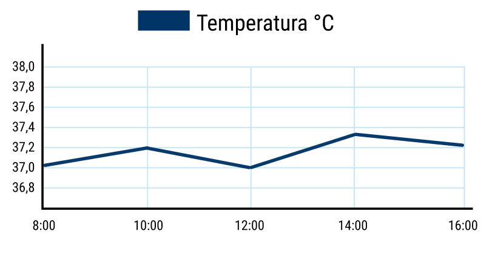

Bitácora digital
3
Pacientes asignados
8
Notas hoy
1
Alertas pendientes
Mis pacientes - Turno mañana
Lionel Manés
Habitación 120
Edad: 19 años
Condición: Post-operativo
Última nota: Hoy 10:30 pm
Signos Vitales
Temperatura: 37.2°C
Presión arterial: 120/80 mmHg
Frecuencia cardiaca: 78 bpm
Saturación: 92 %
Medicación Actual
Analgésico: Ibuprofeno 400mg cada 8h
Antibiótico: Amoxicilina 500mg cada 12h
Última dosis: Hoy 9:00 AM
Patroclo García
Habitación 121
Edad: 19 años
Condición: Post-operativo
Última nota: Hoy 10:30 pm
Signos Vitales
Temperatura: 37.2°C
Presión arterial: 120/80 mmHg
Frecuencia cardiaca: 78 bpm
Saturación: 92 %
Medicación Actual
Analgésico: Iboprufeno 400mg cada 8h
Antibiótico: Amoxicilina 500mg cada 12h
Última dosis: Hoy 8:00 AM
Ivonne Ibáñez
Habitación 123
Edad: 19 años
Condición: Post-operativo
Última nota: Hoy 10:30 pm
Signos Vitales
Temperatura: 37.2°C
Presión arterial: 120/80 mmHg
Frecuencia cardiaca: 78 bpm
Saturación: 92 %
Medicación Actual
Analgésico: Ibuprofeno 400mg cada 8h
Antibiótico: Amoxicilina 500mg cada 12h
Última dosis: Hoy 8:00 AM